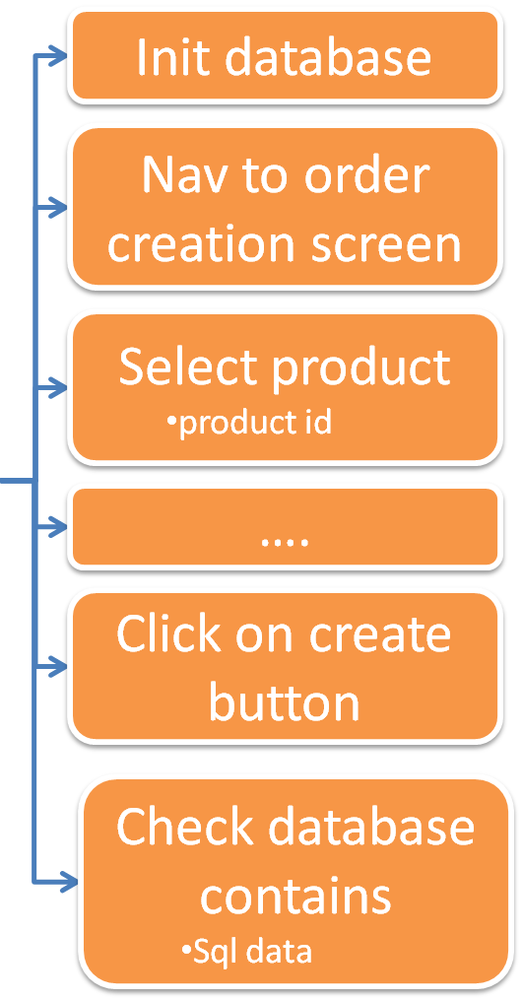
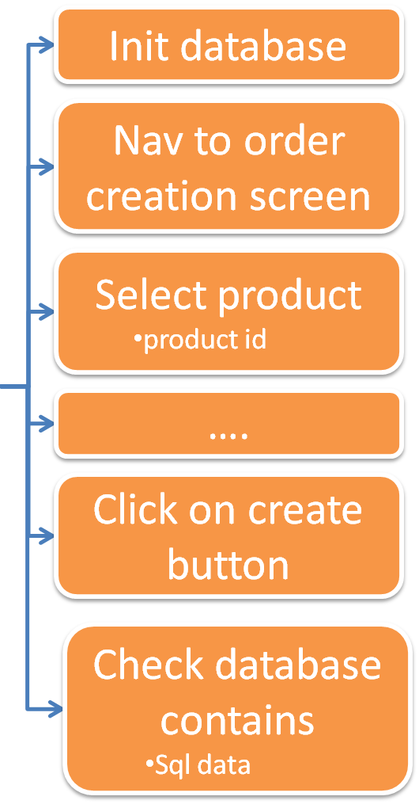

Robot Framework
Test Automation Training
By Julien Brunet
Available on GitHub at
http://julienbrunet.github.io/robot-training
Agenda
-
- Introduction
- Robot Framework concepts
-
- Development basics
- Robot Framework editor : RIDE
-
- Libraries : Database, Selenium...
-
- Extending Robot Framework
Introduction
Technologies
RobotFramework is a test automation framework designed for Acceptance Testing (ATDD)
- Core is written in Python
- Fully compatible with Java (through Jython)
History
RobotFramework concepts
Acceptance Testing / Keyword Driven
Acceptance testing


Keyword Driven

Keyword Driven
Example : test the creation of an order on a web application
 


Robot Framework development basics
Install RobotFramework package
Download the standalone Robotframerwork package from Github and unzip it on your computer :

The only prerequisite to run this RobotFramework package is java 1.6 min.
Content of the RobotFramework package
This package contains the following folder tree :
| robotframework-core | All necessary binaries to run RobotFramework tests | |
| documentation | Documentation on existing libraries and keywords | |
| lib | External robotFramework library binaries | |
| standalone-browsers | Binaries for standalone browsers | |
| web-drivers | Web drivers executable | |
| tests | Where we write all the tests | |
| scripts | The entry point of tests | |
| keywords | The keyword file definition |
A first script
Write the following code in a text file named myFirstTest.robot under "scripts" folder
*** Test Cases ***
My First Test
${current_year}= Get Time year
Should Start With ${current_year} 20
robot.bat file. You should get a success in the report.html file :
Test script architecture
*** Settings ***
Library OperatingSystem
*** Variables ***
${PATH_TO_CHECK} c:\\temp
*** Test Cases ***
Check Host Configuration
[Documentation] Check config...
# Check existence of c:\temp folder
Should Exists ${PATH_TO_CHECK}
Check Host Date Is 2015
*** Keywords ***
Check Host Date Is
[Documentation] Check date...
[Arguments] ${YEAR}
${host_year}= Get Time year
Should Be Equal ${host_year} ${YEAR}
Create a new test case with this Robot Framework code
Test script architecture
*** Settings ***
Library OperatingSystem
*** Variables ***
${PATH_TO_CHECK} c:\\temp
*** Test Cases ***
Check Host Configuration
[Documentation] Check config...
# Check existence of c:\temp folder
Should Exists ${PATH_TO_CHECK}
Check Host Date Is 2015
*** Keywords ***
Check Host Date Is
[Documentation] Check date...
[Arguments] ${YEAR}
${host_year}= Get Time year
Should Be Equal ${host_year} ${YEAR}
*** test cases ***
List of test cases with each test steps inside. Settings of a test cases are :
- [Documentation] Used for specifying the test documentation
- [Tags] Used tagging test cases
- [Setup], [Teardown] Specify test setup (executed before the test) and teardown (executed after the test, even if test failed)
- [Template] Specify the template keyword to use for each step
- [Timeout] Set the test case execution timeout (Test fails if timeout is reached)
Test script architecture
*** Settings ***
Library OperatingSystem
*** Variables ***
${PATH_TO_CHECK} c:\\temp
*** Test Cases ***
Check Host Configuration
[Documentation] Check config...
# Check existence of c:\temp folder
Should Exists ${PATH_TO_CHECK}
Check Host Date Is 2015
*** Keywords ***
Check Host Date Is
[Documentation] Check date...
[Arguments] ${YEAR}
${host_year}= Get Time year
Should Be Equal ${host_year} ${YEAR}
*** keywords ***
Contains keywords commons to your test suite. Keywords declared here can be used anywhere in the suite, even in setup and teardown calls. Keywords settings are:
- [Documentation] Used for specifying the keyword documentation
- [Arguments] Specify the keyword arguments
- [Return] Specify the keyword return value
- [Timeout] Set the keyword execution timeout (Test fails if timeout is reached)
Test script architecture
*** Settings ***
Library OperatingSystem
*** Variables ***
${PATH_TO_CHECK} c:\\temp
*** Test Cases ***
Check Host Configuration
[Documentation] Check config...
# Check existence of c:\temp folder
Should Exists ${PATH_TO_CHECK}
Check Host Date Is 2015
*** Keywords ***
Check Host Date Is
[Documentation] Check date...
[Arguments] ${YEAR}
${host_year}= Get Time year
Should Be Equal ${host_year} ${YEAR}
*** variables ***
Define variables at a "tests suite scope". Variables declared here are accessible from every test cases, keywords or settings
Test script architecture
*** Settings ***
Library OperatingSystem
*** Variables ***
${PATH_TO_CHECK} c:\\temp
*** Test Cases ***
Check Host Configuration
[Documentation] Check config...
# Check existence of c:\temp folder
Should Exists ${PATH_TO_CHECK}
Check Host Date Is 2015
*** Keywords ***
Check Host Date Is
[Documentation] Check date...
[Arguments] ${YEAR}
${host_year}= Get Time year
Should Be Equal ${host_year} ${YEAR}
*** settings ***
- Import libraries
Library libraryName arg1 arg2... - Import External Keyword resources
Resource ../../keywords/myKWords.robot - Setup and Teardown
Suite Setup My Suite Setup Keyword Suite Teardown My Suite Setup Keyword Test Setup My Test Setup Keyword Test Teardown My Test Setup Keyword - Tags
Force Tags TAG1 TAG2 Default tags TAG
Resource files
*** Settings ***
Library OperatingSystem
*** Variables ***
${EXPECTED_YEAR} 2015
*** Keywords ***
Check Host Date Is
[Documentation] Check date...
${host_year}= Get Time year
Should Be Equal ${host_year} ${EXPECTED_YEAR}
No *** Test Cases *** section in resource files !
Initialization files
__init__.ext
*** Settings ***
Suite setup Do Something
Library SeleniumLibrary
Resource ../keywords/myKw.robot
*** Variables ***
${MY_VAR} foo
*** Keywords ***
Do Something
Log ${MY_VAR}
- This file is executed before each other test suites of the current folder
- Resource imported in this file are also available for all the test suites in the same folder
- Libraries, Variables, Keywords are NOT available for suites in the same folder
RobotFramework Editor : RIDE
RIDE (RobotFramework Integrated Development Editor) is a light-weight and intuitive editor for Robot Framework test case files written in Python.
RobotFramework libraries
| Official Libraries | External Libraries | ||||||||||||||||||
|---|---|---|---|---|---|---|---|---|---|---|---|---|---|---|---|---|---|---|---|
|
|

- Launch the H2 database exercises\tools\h2\start_server.bat
-
In a RobotFramework test case
- Import the library named
org.robot.database.keywords.DatabaseLibrary - Connect to the h2 database with the good driver
- Run the file init_data.sql
- Verify the number of row in table "TEST_TABLE" is 3
- Import the library named

- Import the library named
Selenium2Library - Open a firefox browser to http://en.wikipedia.org/
- In the search bar write "Robot Framework" and click on search button
- Verify the displayed page contains the text "Robot Framework is a generic test automation framework"
<input id="searchInput">id=searchInput
Wikipedia Search
Open Browser http://en.wikipedia.org
Input text id=searchInput Robot Framework
Syntax in Robot Framework script
Input text xpath="xpath value" Robot Framework
<html>
<title>My Page</title>
<body>
<span id="welcome-msg">
Hello World
</span>
<div name="form1">
<input id="searchInput">
<input type="button"
value="Valider">
</div>
</body>
</html>
/
/html/body/span
//span//input
//input[@id='searchInput']
//*[text()='Hello World']//*[contains(text(),'Hello']